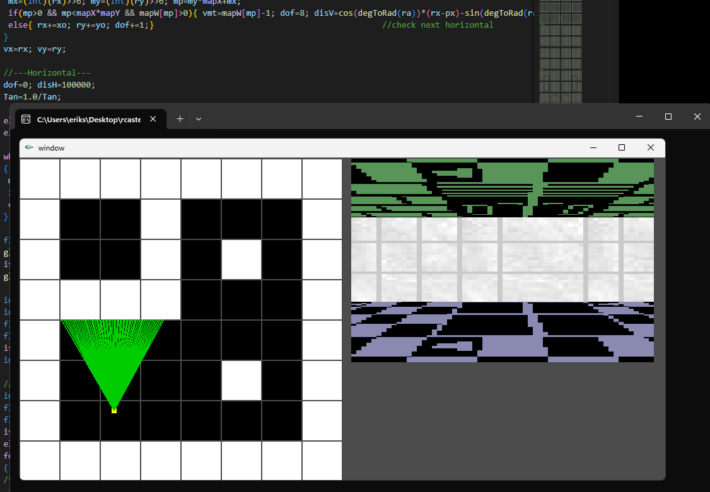
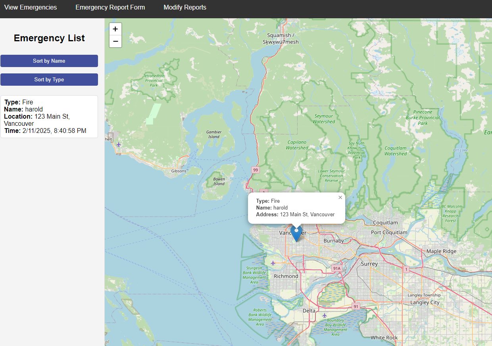

When I chose to study Computer Science I decided to learn python as a project to help solidify the concepts I learned I made a simple snake game.
I found that one of my weaker points was implementing mathematics in my coding to help practice this I created a primitive raycaster using only OpenGL along with some standard C libraries.
During a group project I created a simple site for reporting emergencies. Users of the site can input a type of emergency their info and their location and then the emergency would appear on a map. Another page also allowed for administrators with a password to edit and delete emergencies as they evolved or were resolved.
I recieved my Highschool Degree in 2023 and am on track to recieve my undergraduate degree in Computer Science by 2027.
I have spent time working as general help at Richmond Animal Hospital and Stocking at Kin's Farm Market. I currently work in customer service at London Drugs.
I am CPR-C certified. I also have my my Foodsafe and Worksafe BC certifications.